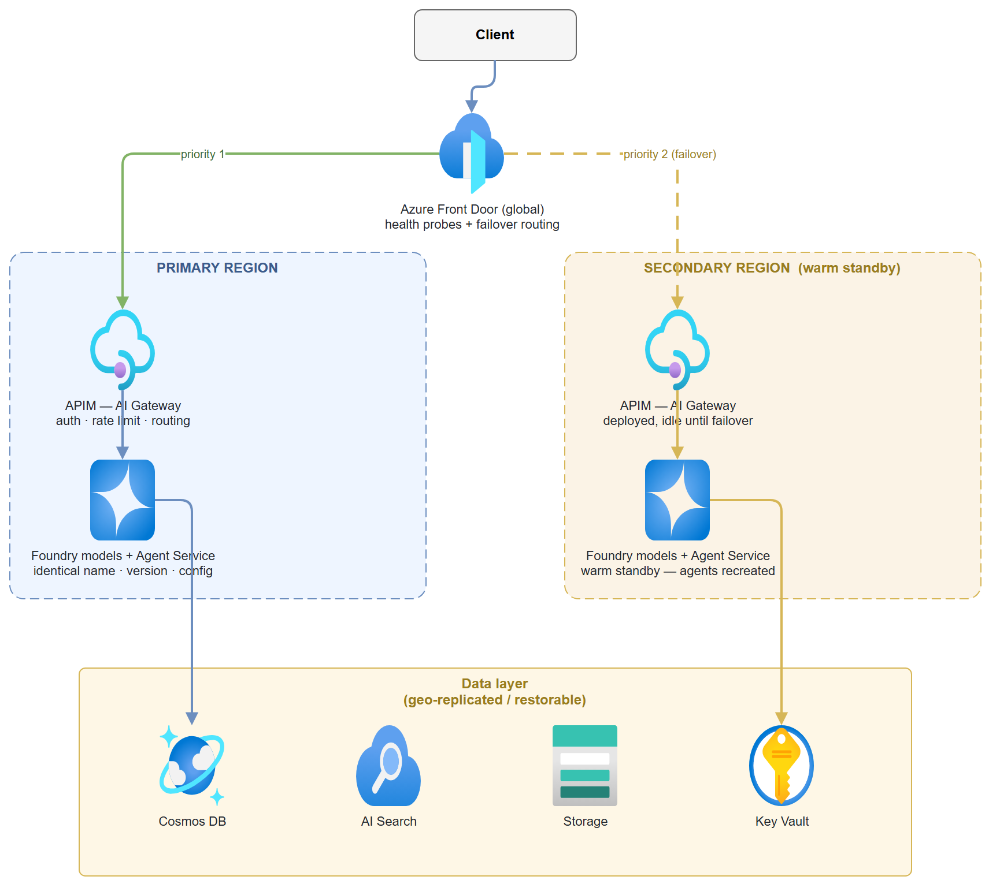

Build it yourself. This project is part of the AI Projects for Cloud Solution Architects portfolio. Full source, code, and the latest updates live in the csa-ai-projects repo on GitHub.
Microsoft Foundry has no native cross-region failover — if your primary region goes dark, traffic does not automatically move. This guide is the blueprint for the failover layer you have to build yourself, so a regional outage degrades to a blip instead of an incident bridge.
Platform note: This is the portfolio's production-hardening guide — an architecture and resilience guide, not a single-script build. It assumes you've shipped a few of the earlier projects (01, 04, 06) and now need to make one of them survive a region outage in front of a customer's risk and compliance team.
What You're Building
A two-region, customer-built failover topology for a Foundry workload: client traffic enters through Azure Front Door, routes to Azure API Management as an AI gateway in each region, and lands on identical Foundry model deployments backed by a geo-replicated data layer. You'll stand up the routing and detection layer, deploy the same model into a paired region, replicate the data services, and wire a failover runbook (script + IaC) that promotes the secondary region — including the part Foundry won't do for you: recreating stateful Agent Service agents from version-controlled definitions.
The deliverable is a working Hot/Warm (active-passive) demo you can fail over on command, plus the decision framework to pick Hot/Hot, Hot/Warm, or Hot/Cold for a given customer's RTO/RPO and budget.
Business Value
| Who | Platform, SRE, and enterprise-architecture teams putting a Foundry workload into production under an availability SLA |
| Why | Foundry offers no built-in regional failover; without this layer a single-region outage is a full outage. Customers in regulated industries can't go to production without a documented, tested DR story |
| Outcome | A tested failover topology with defined RTO/RPO, an IaC + runbook you can clone per customer, and a live demo that simulates a region outage and recovers in front of the room |
Key Constraints (Design Around These)
These are the realities that shape every decision below:
- No native automatic cross-region failover. You orchestrate it. There is no "make it multi-region" switch.
- Model availability is region-dependent. A model offered as Global / Data-Zone / Standard in one region may not exist in another. Confirm your exact model and version in both regions before committing to a pair.
- Agent Service is stateful and cannot run active-active. Agents are recreated on failover, not failed over. In-flight conversation history (threads) is lost unless you persist it yourself.
- Every customer-managed service needs its own resilience design. Cosmos DB, AI Search, Storage, Key Vault, and ACR each fail over differently — there is no single global toggle.
Architecture

Traffic routing and detection live above the regions; the data layer is replicated beneath them. The two regions are mirror images — that symmetry is what makes failover a routing change instead of a rebuild.
Prerequisites
- Two Azure regions — use an Azure paired region in the same geography (e.g.
eastus2/centralus) so data-residency and replication stay in-geo. - A Microsoft Foundry / Azure AI Services resource in each region, each with the same model and version deployed under the same deployment name:
```bash
# Confirm the model + version exists in BOTH regions before committing to a pair
for region in eastus2 centralus; do
echo "== $region =="
az cognitiveservices account list-models \
--name
\ --query "[?name=='gpt-4.1-mini'].{model:name,version:version,sku:skus[0].name}" -o table done
# Deploy identically in each region (same --deployment-name, --model-version, --sku)
az cognitiveservices account deployment create \
--name
Cost flag: Two live regions is roughly double the steady-state cost of one. The pattern you choose (below) is the primary cost lever. Tear demo resources down with the cleanup steps at the end.
Choose Your Pattern First
Everything downstream depends on this. Pick the cheapest pattern that meets the customer's RTO (how fast you must recover) and RPO (how much data you can lose).
| Pattern | Secondary state | RTO / RPO | Cost | Use when |
|---|---|---|---|---|
| Hot/Hot (active-active) | Both regions live, load-balanced | Near-zero | Highest | Strict SLA, latency-sensitive, budget available |
| Hot/Warm (active-passive) ✅ | Pre-provisioned, idle | Minutes | Balanced | Most enterprise workloads — recommended default |
| Hot/Cold (active-passive) | Minimal footprint, deployed on failover | Hours, possible data loss | Lowest | Cost-sensitive, generous RTO, tolerant of data loss |
⚠️ Agent caveat for Hot/Hot: Agent Service cannot run active-active. A true Hot/Hot agent topology only works for stateless request patterns. If your agents rely on server-side threads/state, Hot/Warm is your real ceiling.
The rest of this guide builds the recommended Hot/Warm pattern and notes where Hot/Hot and Hot/Cold diverge.
Step-by-Step Build
Step 1 — Traffic routing layer (Azure Front Door)
Front Door is the single global entry point. Configure both regional APIM gateways as origins in one origin group, with health probes that mark a region unhealthy and reroute automatically.
# Create the profile
az afd profile create --profile-name foundry-fd \
--resource-group <rg> --sku Premium_AzureFrontDoor
# One origin group with health probes (probe the APIM health endpoint)
az afd origin-group create --profile-name foundry-fd --resource-group <rg> \
--origin-group-name foundry-origins \
--probe-request-type GET --probe-protocol Https \
--probe-interval-in-seconds 30 --probe-path /status-0123456789abcdef \
--sample-size 4 --successful-samples-required 3 --additional-latency-in-milliseconds 50
# Primary origin (priority 1) and secondary origin (priority 2 = failover target)
az afd origin create --profile-name foundry-fd --resource-group <rg> \
--origin-group-name foundry-origins --origin-name primary-apim \
--host-name <apim-eastus2>.azure-api.net --priority 1 --weight 1000 --enabled-state Enabled
az afd origin create --profile-name foundry-fd --resource-group <rg> \
--origin-group-name foundry-origins --origin-name secondary-apim \
--host-name <apim-centralus>.azure-api.net --priority 2 --weight 1000 --enabled-state Enabled
- Hot/Warm / Hot/Cold: priority-based routing (primary = 1, secondary = 2). Front Door only sends traffic to the secondary when the primary probe fails.
- Hot/Hot: set both origins to the same priority and use weighted/latency routing to load-balance live.
Traffic Manager is the DNS-based alternative if you need to front non-HTTP endpoints, but Front Door's layer-7 health probes and faster failover make it the default here.
Step 2 — API layer (APIM as AI gateway)
Deploy APIM in both regions. It abstracts the backend region switch so the client never sees a Foundry endpoint directly, and centralizes auth, rate limiting, logging, and routing. Point each regional APIM at its local Foundry endpoint as the backend — keep the data path in-region.
Key configuration:
- Backend per region → the local https://<res-region>.cognitiveservices.azure.com/ Foundry endpoint.
- Named values for endpoints/keys so a failover is a config switch, not a redeploy.
- Managed identity on APIM with Cognitive Services OpenAI User on the Foundry resource — no keys in policy.
- Health endpoint (/status-...) that Front Door probes; have it check the backend, not just APIM liveness.
In Hot/Hot, both APIM instances are live. In Hot/Warm the secondary is deployed and idle; in Hot/Cold the secondary APIM is itself deployed on failover via IaC (Step 6).
Step 3 — Model layer (identical deployments)
The secondary region's models must be a byte-for-byte match of the primary: same model name, version, deployment name, and SKU/capacity. Any drift means requests that work in one region fail in the other. This is the single most common cause of a "failover that didn't".
- Pin the model version explicitly (no floating "latest").
- Keep the deployment definition in IaC so both regions deploy from the same source.
- Re-validate quota in the secondary on a schedule — quota can be reclaimed while a region sits idle.
The deployment type (Global Standard / Data Zone Standard / Standard / Provisioned) decides where inference is processed and how much model availability you get in each region. That choice constrains which region pairs are even viable — see Deployment Types & Data Residency below.
Step 4 — Agent layer (warm standby, recreate on failover)
This is where Foundry's constraints bite hardest. You do not fail an agent over — you recreate it. Treat agent definitions as code:
- Version-control every agent's instructions/prompt, tool configs, model binding, and policies.
- On failover, recreate the agents in the secondary region's Agent Service from those definitions (the runbook in Step 5 does this).
- Conversation history (threads) is lost unless you persist it yourself. If continuity matters, write thread state to the geo-replicated data layer (Step 5) and rehydrate after failover.
A minimal "agent definition as code" record you can store in Cosmos and replay:
{
"name": "policy-bot",
"model": "gpt-4.1-mini",
"instructions": "You are an internal policy assistant. Cite the source document for every answer.",
"tools": [{ "type": "file_search" }],
"metadata": { "version": "2026-06-26", "owner": "platform-team" }
}
For Hot/Hot, duplicated agents only work for stateless patterns — there's no shared server-side agent state across regions.
An agent is more than its definition — it depends on threads, knowledge sources, tool connections, and backing stores, each with its own DR implication. For the full dependency breakdown and the production-grade rehydration pattern, see Agent Service DR: The Stateful Nuance below.
Step 5 — Data layer (replicate or restore)
Each service has its own resilience switch. Match the replication mode to the pattern you picked.
| Service | Hot/Warm + Hot/Hot | Hot/Cold |
|---|---|---|
| Cosmos DB | Add the secondary region + enable automatic failover | Continuous backup → restore on failover |
| Azure AI Search | Maintain a secondary index (replicate on write or scheduled rebuild) | Rebuild index from source on failover |
| Storage | RA-GRS or GZRS | GRS / backup-restore |
| Key Vault | One vault per region, secrets synced | Per-region vault, restore on failover |
| ACR | Geo-replication enabled | Re-push / import on failover |
# Cosmos DB — add the secondary region and enable automatic failover
az cosmosdb update --name <cosmos> --resource-group <rg> \
--locations regionName=eastus2 failoverPriority=0 isZoneRedundant=False \
--locations regionName=centralus failoverPriority=1 isZoneRedundant=False
az cosmosdb update --name <cosmos> --resource-group <rg> --enable-automatic-failover true
# Storage — geo-zone-redundant with read access in the secondary
az storage account update --name <storage> --resource-group <rg> --sku Standard_RAGZRS
# ACR — geo-replicate the registry to the secondary region
az acr replication create --registry <acr> --location centralus
RPO reality check: Cosmos automatic failover with the default consistency can lose the last few seconds of writes. If the customer's RPO is zero, you need strong consistency (and the latency cost) or synchronous app-level writes — say so explicitly in the design doc.
Step 6 — Networking parity
The secondary region's network must mirror the primary or private traffic breaks on failover:
- Identical VNets and subnet layout per region.
- Private endpoints for Foundry, APIM, Cosmos, Search, Storage, and Key Vault — no public exposure.
- Private DNS zones replicated so name resolution works post-failover.
- Hub-spoke alignment consistent with the customer's landing zone.
Step 7 — Failover orchestration
Detection → trigger → execution → validation. Automate as much as the customer's risk appetite allows.
Detect - Front Door health probe failure (automatic). - Azure Service Health and Resource Health alerts. - Application Insights availability tests.
Trigger - Automatic via Front Door probe failure (routing flips on its own), or - Alert-driven via a Logic App / Azure Automation runbook for the steps Front Door can't do (recreating agents, promoting data, deploying Hot/Cold resources).
Execute — the runbook below captures the manual/scripted half:
"""failover.py — promote the secondary region for a Foundry workload.
Routing flips at Front Door automatically; this handles the stateful + on-demand pieces.
"""
import json
import subprocess
import sys
RG = "<rg>"
SECONDARY = "centralus"
def run(cmd: str) -> str:
print(f"$ {cmd}")
return subprocess.run(cmd, shell=True, check=True, capture_output=True, text=True).stdout
def deploy_missing_resources():
"""Hot/Cold only: stand up the secondary stack from IaC."""
run(f'az deployment group create -g {RG} '
f'--template-file infra/main.bicep --parameters region={SECONDARY}')
def promote_data_layer():
"""Trigger Cosmos manual failover if automatic failover is not enabled."""
run(f'az cosmosdb failover-priority-change --name <cosmos> -g {RG} '
f'--failover-policies {SECONDARY}=0 eastus2=1')
def recreate_agents():
"""Agents are recreated, not failed over. Replay definitions from version control."""
for path in ("agents/policy-bot.json", "agents/triage.json"):
with open(path, encoding="utf-8") as f:
definition = json.load(f)
print(f"Recreating agent '{definition['name']}' in {SECONDARY}...")
# Call Foundry Agent Service in the secondary region to (re)create the agent
# from `definition`, then rehydrate any persisted threads from Cosmos.
def validate():
"""Confirm the secondary is actually serving before declaring success."""
run('curl -fsS https://<frontdoor-endpoint>/health')
def main(mode: str = "warm"):
if mode == "cold":
deploy_missing_resources()
promote_data_layer()
recreate_agents()
validate()
print("Failover to", SECONDARY, "complete.")
if __name__ == "__main__":
main(sys.argv[1] if len(sys.argv) > 1 else "warm")
Validate — never declare failover done on routing alone. Hit the Front Door health endpoint, run a real inference request, and confirm an agent responds in the secondary.
Step 8 — IaC & DevOps (prevent drift)
The whole pattern collapses if the two regions drift apart. Lock it down:
- Bicep / Terraform modules for Foundry, APIM, networking, and each data service — parameterized by region so both deploy from one source of truth.
- Dual-region CI/CD pipelines that deploy to primary and secondary from the same commit.
- Version-controlled agent definitions and model configs (Steps 3–4) deployed by the same pipeline.
- A scheduled drift-detection job (e.g.
terraform plan/what-if) that fails the build if the regions diverge.
Deployment Types & Data Residency
The Foundry deployment type decides where inference is processed, how capacity is allocated, and how predictable performance is. It directly constrains which region pairs are viable for failover — a model you can reach in one region under Global Standard may not be deployable as Standard in your secondary at all.
| Deployment type | Data processing | Capacity model | Best for |
|---|---|---|---|
| Global Standard | Prompts/responses may be processed in any Azure region where the model is available | Pay-per-token, shared | Broadest model access, highest default quota, fastest access to new models |
| Data Zone Standard | Processed only within a Microsoft-defined data zone (typically US or EU) | Pay-per-token, shared | US/EU data-boundary control without pinning to a single region |
| Standard | Processed only in the selected Azure region | Pay-per-token, shared regional | Strict single-region data residency, or lower/medium-volume workloads |
| Provisioned | Depends on the chosen flavour: global, data zone, or regional | Reserved PTU capacity | Predictable throughput, low latency variance, mission-critical workloads |
In customer terms:
- Global Standard gives the widest model availability and quota, but inference can be processed anywhere globally.
- Data Zone Standard keeps processing inside a defined boundary such as the EU or US.
- Standard pins processing to one Azure region, but model availability and quota may be more limited there.
- Provisioned reserves dedicated capacity via PTUs — best where predictable performance matters.
Failover implication: for a customer needing a model that isn't offered in their current region, Global Standard or Data Zone Standard may unlock broader availability. But if they require strict regional processing, both the primary and secondary must run Standard (or Regional Provisioned) in regions where that exact model and version exist — confirm this before committing to a region pair (see Prerequisites).
Agent Service DR: The Stateful Nuance
Do not position Foundry Agent Service as a simple active-active service. Unlike a model endpoint, an agent is stateful — it depends on runtime data, tool connections, knowledge sources, and backing stores. Models can be duplicated across regions; agents must be rebuilt or rehydrated from controlled configuration and recoverable state stores.
An agent typically depends on:
| Dependency | DR implication |
|---|---|
| Agent definition | Instructions, model choice, tools, policies, and configuration must be reproducible |
| Conversation threads | Session history depends on backing state stores |
| Knowledge sources | Files, indexes, vector stores, and search indexes must exist or be rebuildable in the recovery region |
| Tool connections | APIs, Functions, Logic Apps, credentials, managed identities, and RBAC must work in the secondary region |
| Cosmos DB, AI Search, Storage | These determine what can actually be recovered after an outage |
Prefer Standard agent mode for production DR. In Standard mode, state sits in customer-managed Cosmos DB, Azure AI Search, and Storage — which gives the customer control over backup, replication, restore, and regional recovery. (In the fully managed mode, you don't own those stores and can't drive their failover.)
Recommended pattern:
- Store agent definitions, prompts, tools, policies, model deployment names, and knowledge bindings in source control.
- Pre-provision the secondary Foundry project, models, identities, networking, Key Vault, Search, Cosmos DB, Storage, and tool endpoints.
- Replicate or restore stateful dependencies using each service's own DR capabilities (see Step 5).
- Rehydrate the agent during failover by redeploying its definition and reconnecting tools and knowledge sources (see Step 7).
- Validate with a test conversation and an end-to-end tool invocation.
- Treat thread-uploaded files as transient unless they're written to authoritative storage and indexed from there.
Customer message: models can be duplicated across regions; agents must be rebuilt or rehydrated from controlled configuration and recoverable state stores.
Enterprise Landing Zone Alignment
To pass a customer's architecture review, the design has to land cleanly in their landing zone:
- Governance: Azure Policy enforced in both regions, RBAC parity, resource locks on the failover-critical resources.
- Security: private endpoints only, no public exposure, a Key Vault per region.
- Observability: Application Insights per region feeding a centralized Log Analytics workspace so you can watch the failover happen end-to-end.
Test It
A failover you haven't tested is a hope, not a plan. Make region-outage simulation a recurring drill:
- Simulate the outage. Disable the primary origin in Front Door (or block the primary APIM health endpoint) and confirm probes mark it unhealthy.
bash az afd origin update --profile-name foundry-fd --resource-group <rg> \ --origin-group-name foundry-origins --origin-name primary-apim --enabled-state Disabled - Watch the reroute. Send requests through the Front Door endpoint and confirm they land in the secondary region (check Log Analytics for the serving region).
- Run the runbook. Execute
python failover.py warm(orcold) and confirm agents are recreated and the data layer is promoted. - Validate end-to-end. Run a real inference + agent request against the secondary and confirm a correct, grounded response.
- Measure. Record actual RTO/RPO against the target and feed the gap back into the design.
- Fail back. Re-enable the primary origin and confirm traffic returns cleanly.
Common Mistakes
- Assuming Foundry fails over for you. It doesn't. No routing, no agent promotion, no data movement happens automatically across regions — all of it is the layer you built here.
- Model/version drift between regions. The deployment name matches but the version doesn't, so failover requests 404 or behave differently. Pin versions in IaC and validate both regions.
- Forgetting agents are recreated, not failed over. Teams design a perfect data-layer failover and then discover their agents — and all in-flight conversations — vanished. Treat agent definitions as code and persist thread state if continuity matters.
- Unvalidated secondary quota. The secondary deployment was fine at design time, then quota got reclaimed while it sat idle. Re-check on a schedule.
- Network asymmetry. Private endpoints or DNS zones exist in primary but not secondary, so private traffic dies the moment you fail over. Mirror the network exactly.
- Never actually testing. Untested DR fails when it matters. Drill it.
Extend It
- Fully automated failover: Wire the Step 7 runbook to a Logic App triggered by a Service Health alert so promotion, agent recreation, and validation run with zero human steps — then add a human-approval gate for production using the pattern from Guide 10.
- Thread continuity: Persist Agent Service thread state to geo-replicated Cosmos on every turn and rehydrate after failover, so conversations survive a regional outage instead of dropping.
- Chaos drills: Schedule automated region-outage simulations (Azure Chaos Studio) and assert RTO/RPO in CI so resilience is continuously verified, not assumed.
- Three-region active-active: Extend Front Door to weighted/latency routing across three regions for a stateless inference tier, keeping the stateful agent tier Hot/Warm.
Resources
- Azure paired regions & cross-region replication
- Azure Front Door routing & health probes
- API Management multi-region deployment
- Cosmos DB global distribution & automatic failover
- Storage redundancy (GZRS / RA-GRS)
- Azure Container Registry geo-replication
- Baseline Microsoft Foundry reference architecture
- Foundry Agent Service overview